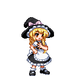

| [ 特 殊 技 ] | ||
| 衝夢 | リーチの長い突き／飛び道具に対して無敵 | |
| 昇夢 |  |
小さく跳んで蹴り上げる／中段攻撃 |
| 衝霊気 | 踏み込んでの両手突き／中段攻撃（強） | |
| 抄霊気 | |
小ジャンプからの足払い／下段攻撃（強） |
| [ 必 殺 技 ] | ||
| 博麗アミュレット | or（空中可） |
ホーミングする大型の札で攻撃 |
| 昇天蹴 | or |
対空サマーソルトキック |
| 警醒陣 | or（空中可） |
敵の行動を制限する壁を生成 |
| 幻想空想穴 | or（空中可） |
敵の上空に瞬間移動し急降下キックやや離れた前方に瞬間移動しスライディング |
| [ スペルカード／ 壱符 ] | ||
| 霊符「夢想妙珠」 | （空中可） | ８個の光の弾で攻撃 |
| 夢符「封魔陣」 | 上空高くまで伸びる結界を生成 | |
| 宝符「陰陽宝玉」 | 手の先に停滞するエネルギー弾で攻撃 | |
| [ スペルカード／ 弐符 ] | ||
| 神霊「夢想封印」 | （空中可） | 威力と攻撃範囲に優れる夢想妙珠の上位版 |
| 神技「八方鬼縛陣」 | より巨大な結界を生成する封魔陣の上位版 | |
| 宝具「陰陽鬼神玉」 | ゆっくりと前進する巨大な光の弾を打ち出す |
霧雨 魔理沙 - 普通の魔法使い -
| [ 特 殊 技 ] | ||
| マスィヴボディ | 強烈なヒップアタック／中段攻撃 | |
| グラウンドウィング | |
両手を軸にしての回転キック |
| マスィブブルーム | 箒で上から叩きつける／中段攻撃（強） | |
| パワースウィープ | |
箒で足元を大きく払う／下段攻撃（強） |
| [ 必 殺 技 ] | ||
| ミアズマスウィープ | or |
箒を持って上昇／は打撃、は飛び道具に対して無敵 |
| ウィッチレイライン | or（空中可） |
箒に乗って突進／は飛び道具に対して無敵 |
| グラウンドスターダスト | or |
地面で爆発する謎の瓶を投擲 |
| [ スペルカード／ 壱符 ] | ||
| 恋符「マスタースパーク」 | 符力ゲージを全て消費し、超強力なビームを放つ | |
| 魔符「スターダストレヴァリエ」 | （空中可） | 箒に跨り星屑と共に突進する |
| 儀符「オーレリーズサン」 | 自分の周囲に四つのビットを装着 | |
| ┣（空中可）
┣ ┗（ﾋﾞｯﾄ4つ時のみ） |
ビットを１個、敵に向かって飛ばす
周囲のビットに攻撃力を持たせる 全てのビットを纏めて敵にとばす | |
| [ スペルカード／ 弐符 ] | ||
| 魔砲「ファイナルスパーク」 | より強化されたマスタースパーク | |
| 彗星「ブレイジングスター」 | （空中可） | 画面外に一度退避し、巨大な彗星となって突撃する |
| 天儀「ｵｰﾚﾘｰｽﾞｿｰﾗｰｼｽﾃﾑ」 | 自分の周囲に六つのビットを装着 | |
| ┣（空中可）
┣（空中可） ┣ ┗（ﾋﾞｯﾄ6つ時のみ） |
ビットを一つ、敵に向かって飛ばす
ビットを一つ使用して、一定時間レーザーを照射させる 周囲のビットに攻撃力を持たせる 全てのビットを纏めて敵にとばす |